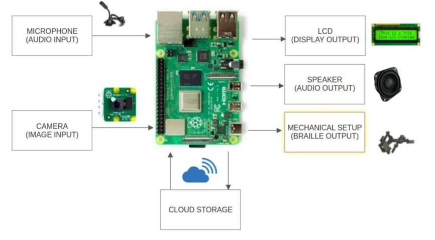
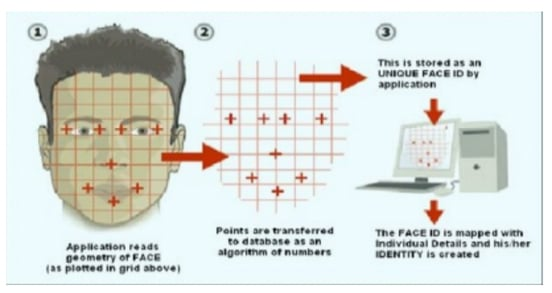
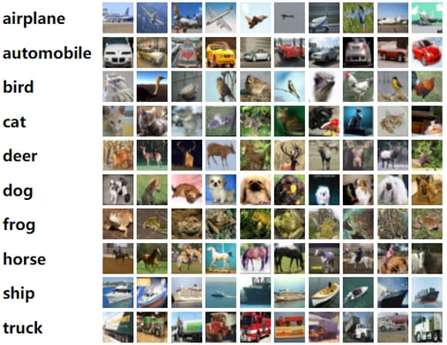

Vaishnavi Athrey
Ramesh.
Backend Engineer_
I move data between databases without losing any of it. At IBM and Amazon, that meant migrating live services off MongoDB onto PostgreSQL and Redshift, then writing the tests that prove every row survived. I'm now doing a Master's at Carnegie Mellon to go deeper on the distributed-systems side of that work.
 Pittsburgh, PA
Pittsburgh, PA
A bit about me
I'm a software developer with 2.5+ years of industry experience building backend and full-stack systems in Java, Go, C++, and Python. Most of my professional work sits at the intersection of database migration and distributed service architecture. That means normalizing schemas, replatforming microservices, and writing the checks that confirm billions of records still reconcile after they move.
I've taken systems from API design through production deployment, first inside IBM's banking platform and then at Amazon, where a pipeline I built analyzed 87B+ records to close reconciliation gaps in a company-wide ledger. Outside of work, I've been teaching myself agentic AI through independent projects, including a RAG-based document review tool.
I'm currently pursuing a Master of Information Systems Management at Carnegie Mellon University, filling in the distributed-systems and machine learning theory behind the work I already ship.
Carnegie Mellon University
R.V. College of Engineering
Where I've worked
Software Developer Summer Intern · Amazon
Jun 2026 – Aug 2026- Built a Redshift and Athena-backed data-integrity monitoring tool using two cross-service entropy checks for the accounting pipeline, validating 8M+ production records with zero false positives.
- Replaced a legacy bulk SQL JOIN with a GraphQL-based lookup in a Java service-layer feature handling 5,000+ transactions per second, and provisioned the supporting AWS infrastructure via CDK (Redshift Serverless, Lake Formation, S3, IAM, KMS).
- Designed a General Ledger AWS pipeline integrating a previously uncaptured financial source into the UFL ledger, analyzing 1,700+ accounting source types across 87B+ records to close reconciliation gaps against the company-wide P&L.
Software Developer I · IBM
Apr 2024 – Jul 2025- Migrated the persistence layer of distributed Go and Java microservices from MongoDB and DB2 to PostgreSQL and AWS Redshift, redesigning normalized schemas and converting GORM and JDBC data-access code. Query performance improved by 25% and storage costs dropped by 34%.
- Built a DB2 and PostgreSQL compatibility layer for the Risk Analytics Engine, replacing DB2-specific JDBC calls and rewriting dynamically generated SQL so queries stay portable across both engines in production.
- Root-caused cross-service failures in a multi-tenant risk-analytics pipeline spanning Kafka event delivery and gRPC/protobuf APIs, tracing a DB2 column-resolution error through tenant-scoped SQL to its source in the query generator.
Software Developer Intern · IBM
Jan 2023 – Jul 2023- Developed a responsive Angular-based account creation and onboarding flow for a digital banking product, reducing user drop-off by 20%.
- Built Java and Spring Boot REST APIs backed by MySQL to power core banking transactions, adding request validation and service-layer logic for user account and payment workflows.
- Took ownership of the remaining project scope after a teammate's departure left the 3-person intern team at two, splitting the workload with the remaining intern and leading delivery of the onboarding flow and REST APIs on schedule.
Skills & tools
Languages
Frameworks & Tools
Libraries
Databases
Featured projects
Independent builds where I owned the whole stack. Numbers and architecture details live on each project's page.
DocuMind AI
A retrieval-augmented generation pipeline for legal document review. Clause and table extraction with pdfplumber, chunked embeddings in Pinecone through LangChain, and a FastAPI backend serving a Next.js frontend, all containerized with Docker.
Sign Language to Speech
A CNN trained on 26 ASL letters, fed by an OpenCV pipeline that isolates a hand from a live webcam frame with grayscale thresholding and contour segmentation. The prediction goes straight to speech, no manual interpretation step.
Telehealth Platform
A Django and MongoDB healthcare platform built during COVID-19. Zoom API integration for live doctor-patient consultations, plus a payment gateway handling order confirmation and status callbacks end to end.
Recent coursework
Current CMU work. A deep learning project decoding brain signals, and three solo builds from Software Engineering for AI-Enabled Systems.
EEG-to-Image Decoding
A CNN and Transformer pipeline for 11-785 that decodes 122-channel EEG recordings into the image category a subject was looking at, plus a CLIP-based retrieval task matching brain signals back to captions. Team of 3.
Movie Recommender on Kafka Streams
A recommender built on a live Kafka event stream. Collaborative filtering and content-based models for existing users, plus an LLM cold-start path for new users who only described their taste in a sentence.
AI Risk Analysis Automation
LLM-assisted tooling that automates STPA-style risk analysis for a dashcam missing-child-search system: stakeholders, then goals through requirements, then assumptions and specs, with schema-constrained output and a human-review checkpoint at every stage.
LLM Features for Zulip
Two features shipped into Zulip's real production codebase: a message recap that summarizes unread messages with clickable citations, and a topic-drift detector that watches a conversation and suggests a better title, both running on async queue workers.
Before backend systems
There was robotics, computer vision research, and a fair amount of community organizing back in Bengaluru. None of this is on my résumé, but it's where a lot of the curiosity started.

An Atmega328-based IoT system that automates temperature, soil moisture, and light control for a greenhouse.

An accessibility-motivated project using speech recognition on a Raspberry Pi to drive a robotic arm hands-free.

A research paper comparing YCgCr and YCbCr color-space thresholding for skin and face segmentation.

A research paper benchmarking active learning query strategies against random sampling on CIFAR-10, EuroSAT, and Fashion MNIST.
A volunteer-NGO matching platform with an application system and an e-commerce portal for NGO products.
Rotaract RVCE & community initiatives
Mask distribution during COVID-19, a paper recycling drive, a Cubbon Park clean-up, and an EVS curriculum program for 3rd graders.
Let's build
something real.
Open to full-time software engineering roles and interesting collaborations. If you have a hard data or distributed-systems problem, I'd like to hear about it.